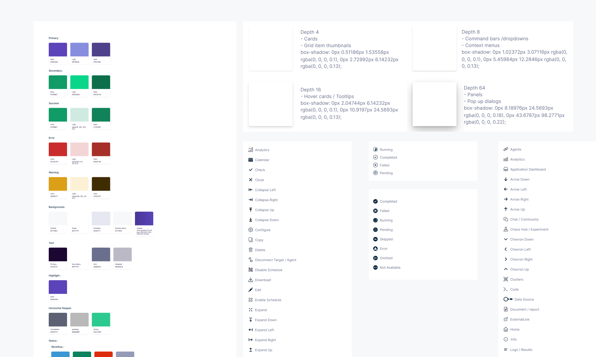
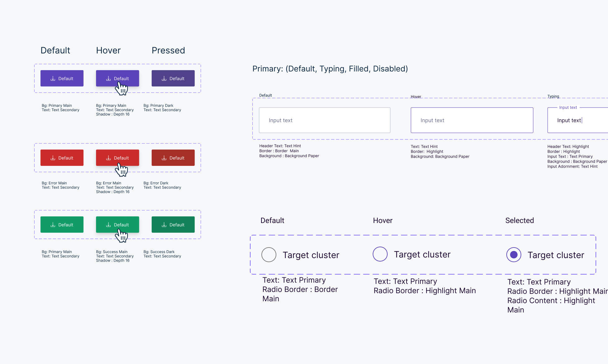
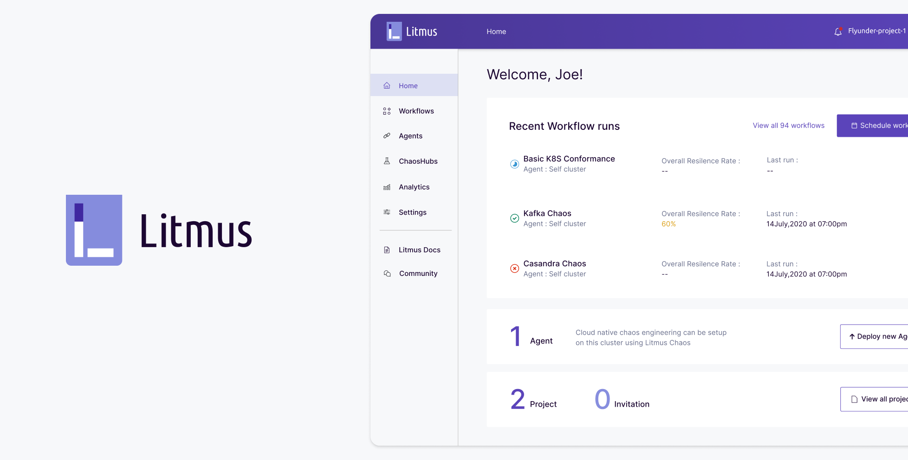
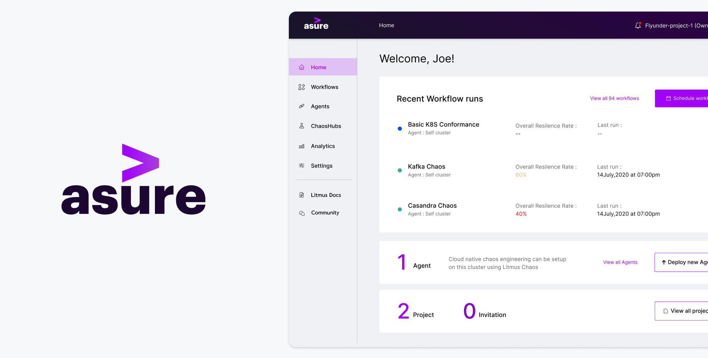

Building a Design System
Behind the scenes of LitmusChaos resilient design system
To comply with my non-disclosure agreement, I have omitted and obfuscated confidential information in this case study. All information in this case study is my own and does not necessarily reflect the views of MayaData or ChaosNative.
The problem
Working in programming improvement and plan, we are frequently needed to dispatch one-off arrangements. In some cases we're working inside time limitations and here and there we simply haven't yet settled upon a way ahead. These oddball arrangements aren't innately awful, yet on the off chance that they aren't based upon a strong establishment, we in the long run end up repaying gathered specialized and plan obligations. Visual language resembles some other language. Misconceptions emerge if the language isn't shared and perceived by everybody utilizing it. As an item or group develops, the difficulties inside these modalities compound. Design has always been largely about systems, and how to create products in a scalable and repeatable way. A bound together plan framework is fundamental for building better and quicker; better on the grounds that a strong encounter is all the more handily comprehended by our clients, and quicker on the grounds that it's anything but a typical language to work with.
Why we need Design Systems
MayaData has encountered a ton of development throughout the long term. Unmistakably we required more efficient approaches to guide and use our aggregate endeavors. While we perceived these difficulties inside the organization, I accept they are manifestations of bigger software industry issues.
Multiple designers and stakeholders
Software is frequently worked by groups now and then unbelievably enormous groups of individuals. The test to make cognizant encounters increases dramatically as more individuals are included along with everything else. Additionally after some time, regardless of how predictable or little a group is, various individuals will contribute new arrangements and styles, making encounters separate.
Software as a continuum
Another exceptional thing about software is that, while it very well may be viewed as an item, it doesn't actually wear out and get supplanted like customary shopper items. Code and plans made years prior still exist in numerous spots, even after the scene of an organization and its item have moved essentially. This requires consistent support and updating.
Getting Started
To work through these challenges and keep our decision making process fast, I was teamed up with two talented frontend developers at MayaData who gave the programming & technology constraints and explain me how javascript objects and variables work, along with react-theming. We cleared our calendars and for around two weeks looking through all the designs of each product we jotted down the common elements, the coloring schemes and then planned in creating the design system.
Laying the foundation
While looking through the designs of each product I became aware that in designs various things are common like buttons, input fields, only they look different due to their colors, or the icons used and many other things. So we needed to bring a common ground for all these things and created a color system, shadows and iconography
Creating the components
There can be many components and it was not possible how developers are creating the components like in a product someone has created a component called container but in other product it is created by grid component. So after disussing with the talented frontend developers they suggested to use a common JS library package and we decided with Material Design , and after reading though its component style guide , it became easy to know which components we definitely needed to create and assign the properties and making variants.
Compiling the Library
While creating these components, we collected them in a master file called the library, which we referred to throughout the design process. After a week or two we began to see huge leaps in productivity by using the library when iterating on designs. It became easy to create our produt based on our partners company color guide, like Accenture asure, Nagarro’s nsure. It would have took weeks to design screens by changing colorsof each element but now it only takes a sanp of fingers like Thanos to change the colors of our product. Also makes a guidance for upcoming design of products.
 Lessons learned
We knew that this was a challenging project. It meant re-designing and rebuilding the majority of the views in our software. As with any project, there are things we wish we would have done differently. While this was a monumental task that ended up requiring efforts from many of our product teams, we found that creating our Design Language System was worth the investment and a huge leap forward. Since the design language and code are often shared, we can now build and release features on all native platforms at roughly the same time. Development is generally faster, since product engineers can focus more on writing the feature logic rather than the view code. Additionally, engineers and designers now share a common language. I believe that aided with these systems we were able to focus more on actual user experiences and concepts we want to create in the future.
Resources
To view the design file with components and guidelines : Click here